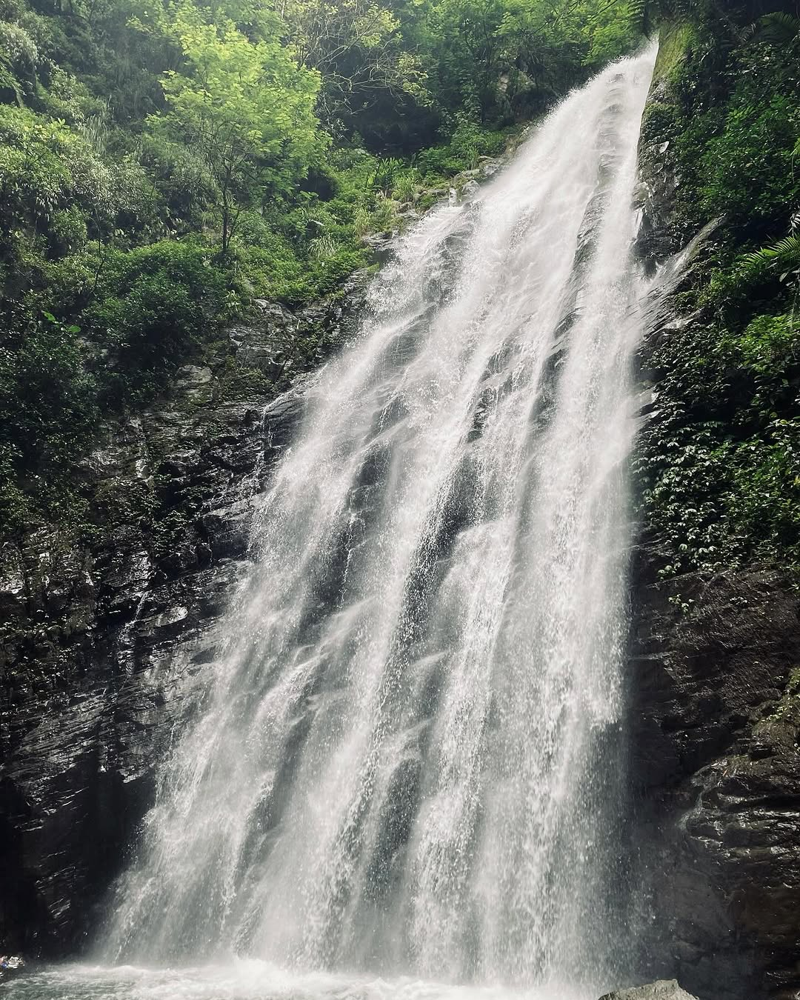
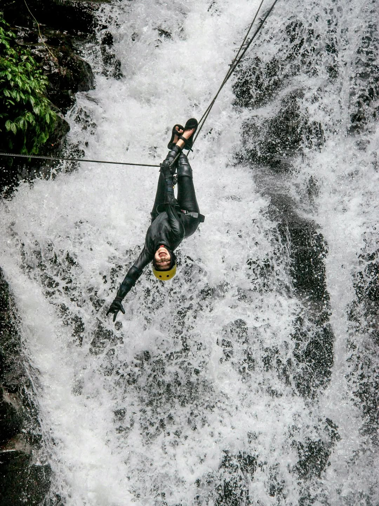
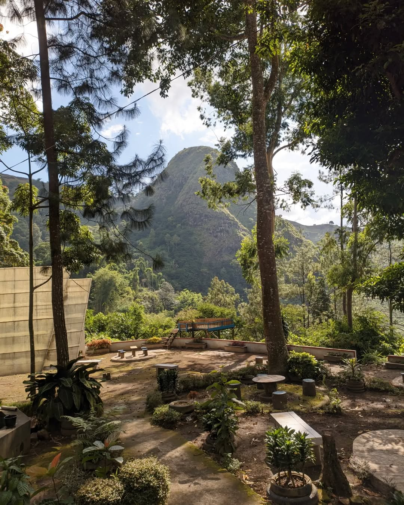

🌿 Objek Wisata & Spot Foto

🌫 Air Terjun

🌊 Canyoneering

🌉 Jembatan Spot Foto

Curug Muara Jaya (dikenal juga Curug Apuy) adalah objek wisata air terjun bertingkat di lereng Gunung Ciremai dengan total ketinggian sekitar 73 meter. Curug ini menawarkan panorama tebing, lembah, dan kolam penampung yang berasal dari mata air pegunungan asli — sangat sejuk dan instagramable.


Alamat: Kampung Apuy, Desa Argamukti, Kecamatan Argapura, Kabupaten Majalengka. Akses jalan cukup baik; sekitar 23 km dari pusat Kota Majalengka dengan pemandangan hijau sepanjang perjalanan.
Hubungi pengelola untuk info paket, canyonering, dan pemesanan guide:
WhatsApp: +62 812-3456-7890
Instagram: @curugmuarajaya.official